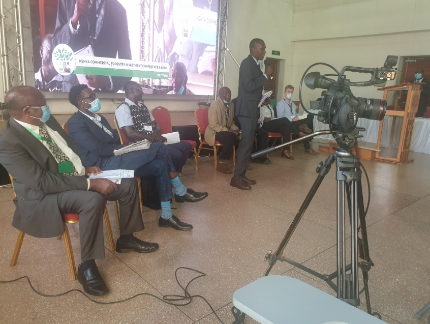

Kenya Commercial forestry
Feedback from UNDP sponsored youth on the Kenya Commercial forestry Investment Conference held 23-26th November 2021, in KEFRI Headquarters, Muguga.
Feedback from UNDP sponsored youth on the Kenya Commercial forestry Investment Conference held 23-26th November 2021, in KEFRI Headquarters, Muguga.
The conference has come at the right time when the world leaders just concluded the United Nations climate change conference (COP26) in Glasgow, UK. In this year too, the UN Decade on Ecosystem Restorations was launched. For Kenya, the conference comes at a time when the country has been ranked the 31st most valuable country to climate change. Similarly, Kenyan Government commitment to increasing tree cover under the on-going National Tree Planting Campaign, has witnessed more desire to engage with the Private sector through Public Private People Partnership to achieve it’s 10% Trees cover.
The reason why I applied is because I am a youth champion with the responsibility to contribute to the green agenda in Kenya. I wanted to learn new tree planting technologies, establish networks, share the knowledge and experiences that I possess. As an individual I have gained a lot and will have a huge impact on the future of my enterprise. Being offered the sponsorship by UNDP Kenya has been a great honour to me considering the rigorous selection processes and the elimination of other young people. I feel I am a youth whose impact has been recognized. As a participant at the conference courtesy of UNDP Kenya, it means my work has been recognized and my profile raised which makes me feel appreciated. Secondly, being nominated as the only young person in the panel came as a surprise to me. Sharing my knowledge and experiences with other attendees brought me a feeling of success that is beyond measure.
The conference brought together all the relevant key stakeholders and players in the commercial forestry sector- from the small-scale farmers from rural villages to global corporations that run commercial forestry businesses. These are people I have considered in my long-term plans. The sessions were very informative and well-articulated.
I am challenged as a young person by the amazing work being done by different sector players and how huge financial returns their businesses make. I foresee a brighter future with UNDP Kenya as a partner. Personally, I envision massive expansion and increasing production with introduction of new tree species. There are a lot of opportunities out there and I will be doing tree growing guided by research and technology.
I have a couple of recommendations: • Post conference meeting with the youth champions within the next 3-6 months. • Provide more clarity on how forestry youth champions can benefit from other UNDP projects such as GrEYAP. • UNDP to keep supporting some of the enterprises; it can be technical, in kind or financial support especially to the most potential enterprises with reasonable financial returns. • Linking us to investors who are already in partnership with UNDP such as Gatsby Komaza, KEFRI, KFS and Financial institutions • Letters of recommendation to be provided to youth champions so that we can attach when writing to institutions when seeking business and other opportunities. • UNDP to support our recognition as Youth Champions/ Ambassadors by the government • Youth champions to be considered in the forthcoming tree growing fund through other grants that UNDP is spearheading
Abdikadir Aden Hassan, HSC, is the CEO and Founder, Garissa Million Trees; and a Youth in Environment Champion. Interview by Julius Coredo, Portfolio Analyst-Inclusive Growth, UNDP in Kenya